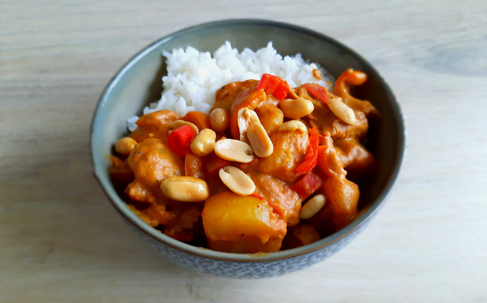

enge aardappels

finse witte kool rolletjes

hutspot uit eigen land
hongaarse goulash

limburgs friet zoervleis

japanse beef teriyaki

indiase dahl linzencurry

franse bouillabaisse

thaise massamancurry
Deze curry staat erom bekend dat deze relatief mild is in vergelijking met de overige Thaise curry's.

Bereidingsduur: 60 minuten
Aantal personen: 3
Ingrediënten:
650 gram aardappels
400 gram rundvlees
400 milliliter kokosmelk
250 gram pandanrijst
1 theelepel sereh
1 ui
1 theelepel kerriepoeder
3 eetlepels tamarindepasta of limoensap
2 bosuitjes
2,5 eetlepel massamanpasta of garnalenpasta
2 laurierblaadjes
2 eetlepels palmsuiker
1 theelepel kaneel
2 handjes ongezouten pinda's
650 gram aardappels
400 gram rundvlees
400 milliliter kokosmelk
250 gram pandanrijst
1 theelepel sereh
1 ui
1 theelepel kerriepoeder
3 eetlepels tamarindepasta of limoensap
2 bosuitjes
2,5 eetlepel massamanpasta of garnalenpasta
2 laurierblaadjes
2 eetlepels palmsuiker
1 theelepel kaneel
2 handjes ongezouten pinda's
Instructies:
1. Schil en kook de aardappelen tot deze bijna gaar zijn. Kies ondertussen de gewenste currypasta uit.
2. Snijd het vlees in kleine stukjes.
3. Verhit olie in een wokpan op minimumtemperatuur en voeg de currypasta toe en roer tot er een goede geur vanaf komt. Voeg de kokosmelk toe en roer zacht. Voeg het vlees samen met de palmsuiker toe en laat dit 10 minuutjes zachtjes koken.
4. Maak de rijst klaar volgens de aanwijzingen op de verpakking.
5. Snijd de ui en bosui en bak deze mee in de wokpan. Roer en voeg de tamarinde saus, laurier bladeren en de kruiden toe. Snijd de aardappelen in kleine blokjes en voeg toe. Laat het ongeveer 5 minuten koken.
6. Voeg de pinda?s naar smaak toe. Verwijder de laurierblaadjes. Serveer de rijst erbij.
1. Schil en kook de aardappelen tot deze bijna gaar zijn. Kies ondertussen de gewenste currypasta uit.
2. Snijd het vlees in kleine stukjes.
3. Verhit olie in een wokpan op minimumtemperatuur en voeg de currypasta toe en roer tot er een goede geur vanaf komt. Voeg de kokosmelk toe en roer zacht. Voeg het vlees samen met de palmsuiker toe en laat dit 10 minuutjes zachtjes koken.
4. Maak de rijst klaar volgens de aanwijzingen op de verpakking.
5. Snijd de ui en bosui en bak deze mee in de wokpan. Roer en voeg de tamarinde saus, laurier bladeren en de kruiden toe. Snijd de aardappelen in kleine blokjes en voeg toe. Laat het ongeveer 5 minuten koken.
6. Voeg de pinda?s naar smaak toe. Verwijder de laurierblaadjes. Serveer de rijst erbij.